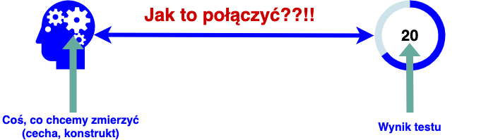

Krótkie wprowadzenie do psychometrii
Małgorzata Basińska
Cel zajęć
Po tych zajęciach będziecie wiedzieć
- co jest przedmiotem psychometrii…
- …i po co się jej uczycie
- co to jest test psychologiczny
- jakie są kryteria dobroci testu
- jakie są źródła błędu w pomiarze testowym
Proszę wykonać test i na górze kartki wpisać 1
Co jest przedmiotem psychometrii
Definicja psychometrii
Dziedzina zajmująca się opisem i mierzeniem
zjawisk i procesów psychicznych,
zwłaszcza teorią i konstrukcją
narzędzi służących do tego celu (Zawadzki & Hornowska, 2008)
Jak nazywa się takie narzędzie?
Na jakie pytania odpowie Wam dorobek psychometrii
- Jak odróżnić dobry test psychologiczny od złego
- Jak tworzyć testy
- Jak konstruować pozycje testowe
- Na jakiej podstawie spośród wielu propozycji pozycji testowych wybrać te najlepsze
- Jak przekształcić odpowiedzi w teście na wynik testu
- Jak przebiega adaptacja testu stworzonego w innym języku i w innych warunkach kulturowych
- W jakim stopniu możemy z wyniku testu wyciągać wnioski na temat mierzonej cechy
- Jak dokładnie wynik testu odzwierciedla rzeczywisty poziom cechy, którą mierzy test
- Jak interpretować wyniki testów
- Jak oceniać to, czy i na ile test jest bezstronny
Naczelne pytanie psychometrii

Dlaczego psychometria jest ważna 1

Dlaczego psychometria jest ważna 2

Testy psychologiczne - definicja
Definicja testu wg “Standardów”
Narzędzie lub procedura pozwalające
na otrzymanie próbki zachowań osoby badanej
w określonej dziedzinie oraz na standaryzowany
sposób ich oceny lub punktacji (AERA, APA, & NCME, 2007)
Definicja testu wg S. Urbiny
- Systematyczna procedura
- otrzymywania próbek zachowania,
- istotnych dla poznawczego, afektywnego
lub interpersonalnego funkcjonowania,
- oraz punktacji i oceniania tych próbek
- zgodnie ze standardami. (Urbina, 2014)
Czy to test psychologiczny?

Rodzaje testów
Jakie są rodzaje testów (Hornowska, 2009)
- indywidualne vs grupowe
- standaryzowane vs niestandaryzowane
- właściwości poznawczych vs afektywnych
- słowne vs bezsłowne
- szybkości vs mocy
- obiektywne vs nieobiektywne
- zorientowane na normy vs zorientowane na kryterium
Jaki to test?
Kwestionariusz kompetencji społecznych
Informacja ze strony Pracowni Testów PTP: KKS służy do oceny kompetencji społecznych rozumianych jako nabyte umiejętności warunkujące efektywność funkcjonowania człowieka w różnych sytuacjach społecznych. (…) kwestionariusz składa się z 90 pozycji, stanowiących bezokolicznikowe określenia różnych czynności. Badany ocenia na skali czterostopniowej efektywność, z jaką je wykonuje.
indywidualny/grupowy | standaryzowany/niestandaryzowany | właściwości poznawczych/afektywnych | słowny/bezsłowny | szybkości/mocy | obiektywny/nieobiektywny | zorientowany na normy/zorientowany na kryterium
Jaki to test?
Skala Inteligencji Wechslera, podtest powtarzanie cyfr wprost
Zadaniem osoby badanej jest powtórzenie podanych cyfr. Pierwsza próba polega na powtórzeniu trzech cyfr, w kolejnych próbach zwiększana jest liczba cyfr do powtórzenia.
indywidualny/grupowy | standaryzowany/niestandaryzowany | właściwości poznawczych/afektywnych | słowny/bezsłowny | szybkości/mocy | obiektywny/nieobiektywny | zorientowany na normy/zorientowany na kryterium
Jaki to test?
Informacja ze strony Pracowni Testów PTP: Kwestionariusz mierzy motywację osiągnięć z uwzględnieniem różnych jej komponentów, takich jak preferowanie trudnych zadań, wiara w sukces, ukierunkowanie na cel, nastawienie na rywalizację, wytrwałość i inne. Pozwala dzięki temu na diagnozę profilową. Łącznie zawiera 170 pozycji tworzących 17 skal. Wyniki mogą też być ujmowane na trzech skalach czynnikowych, którymi są: Pewność siebie, Ambicja i Samokontrola.
indywidualny/grupowy | standaryzowany/niestandaryzowany | właściwości poznawczych/afektywnych | słowny/bezsłowny | szybkości/mocy | obiektywny/nieobiektywny | zorientowany na normy/zorientowany na kryterium
Jaki to test?
Informacja ze strony Pracowni Testów PTP: CTT jest testem neuropsychologicznym służącym do badania różnorodnych procesów związanych z uwagą i funkcjami wykonawczymi (…). Składa się z dwóch części CTT-1 i CTT-2, podawanych osobie badanej jedna po drugiej. Każda z części zawiera różowe i żółte kółka w których umieszczone są liczby od 1 do 25. Zadaniem badanego jest połączenie liczb liniami prostymi w porządku rosnącym, przy czym w CTT-2 należy je łączyć tak, aby zachować naprzemienność kolorystyczną.
indywidualny/grupowy | standaryzowany/niestandaryzowany | właściwości poznawczych/afektywnych | słowny/bezsłowny | szybkości/mocy | obiektywny/nieobiektywny | zorientowany na normy/zorientowany na kryterium
Jaki to test?
Wejściówka na psychometrii :)
indywidualny/grupowy | standaryzowany/niestandaryzowany | właściwości poznawczych/afektywnych | słowny/bezsłowny | szybkości/mocy | obiektywny/nieobiektywny | zorientowany na normy/zorientowany na kryterium
Jak oceniamy testy psychologiczne
Warunki, które powinien spełniać test psychologiczny
- Obiektywność
- Standaryzacja
- Rzetelność
- Trafność
- Normalizacja
- Właściwa adaptacja
Dlaczego psychometria jest ważna raz jeszcze
- Testy są jednym z podstawowych narzędzi stosowanych przez psychologa
- Psychometria pozwoli Wam odróżnić dobry test od złego
- Żaden test psychologiczny nie jest idealnym narzędziem
- Żeby odpowiedzialnie stosować testy, trzeba wiedzieć, jakie są warunki i ograniczenia ich stosowania
Warunki, które powinien spełniać test psychologiczny
Rudner, L. M. (1994). Questions to ask when evaluating tests. Practical Assessment, Research and Evaluation, 4(2). Retrieved from https://scholarworks.umass.edu/cgi/viewcontent.cgi?article=1045&context=pare
Błąd w pomiarze testowym
Skala Samooceny Rosenberga podejście 2
- wypełnij test po raz drugi, na górze kartki zapisz wielkie 2
- podsumuj, ile uzyskałeś/aś punktów:
- za każdą odpowiedź w pytaniach 3, 5, 8, 9, 10 otrzymujesz tyle punktów, ile jest zapisane powyżej odpowiedzi
- w pytaniach 1, 2, 4, 6, 7 musisz odwrócić skalę tak, by za odpowiedź “zdecydowanie zgadzam się” otrzymać 4 punkty, a za odpowieź “zdecydowanie nie zgadzam się” 1 punkt
- czy w obydwu przypadkach uzyskałaś/eś tyle samo punktów?
Test idealny

Co składa się na wynik, który obserwujemy w teście?
\[X_O=X_t+X_e\] \(X_O\) - wynik obserwowany
\(X_t\) - wynik prawdziwy
\(X_e\) - błąd
Jakie są źródła błędu podczas testowania [McIntire & Miller (2007)](Urbina, 2014)
- kontekst przeprowadzenia testu
- ocena testu
- osoby badane
- konstrukcja testu (test sam w sobie)